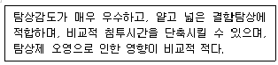
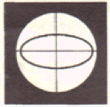
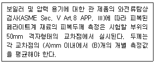
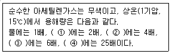

와전류비파괴검사기사(구) (2008-05-11 기출문제)
1과목: 와전류탐상시험원리
1. 교류자화에 있어서 표피효과에 대한 설명으로 틀린 것은?
- 와전류의 분포가 표면부위에서 집중된다.
- 와전류의 강도는 표면 부근에서 더 크다.
- 와전류 밀도는 원주의 표면 근처에서 최소가 된다.
- 자속밀도가 표면치의 약 37%로 저하하는 곳의 깊이를 표준침투깊이라 한다.
(정답률: 알수없음)

2. 전기저항이 30Ω이고 리액턴스가 40Ω인 코일의 임피던스는 몇 Ω인가?
- 30
- 40
- 50
- 60
(정답률: 알수없음)
3. 와전류탐상시험에서 코일의 임피던스에 영향을 주는 인자와 가장 거리가 먼 것은?
- 시험체의 저항율
- 시험체의 투자율
- 시험체의 치수
- 시험체의 탄성율
(정답률: 알수없음)
4. 어느 재료에 주파수가 10kHz일 때 와전류 침투깊이가 3mm이었다. 다른 조건은 변화시키지 않고 단지 주파수만 5kHz로 변경하였다면 침투깊이는 약 얼마가 되겠는가?
- 1.8mm
- 3.0mm
- 4.2mm
- 5.4mm
(정답률: 알수없음)
5. 다음 중 와전류를 이용한 강자성체의 재질시험에 가장 크게 영향을 주는 인자는?
- 전도율
- 투자율
- 주파수
- 온도
(정답률: 알수없음)
6. 검사코일의 유도리액턴스와 저항을 각각 X, Y축으로 표현한 그래프름 무엇이라 하는가?
- 자기 이력곡선
- 임피던스 평면
- 벡터 포인트 평면
- 인덕턴스 평면
(정답률: 알수없음)
7. 와전류탐상시험에서 시험코일의 임피던스에 영향을 미치는 인자와 가장 거리가 먼 것은?
- 시험체의 전도도
- 시험 속도
- 시험주파수
- 코일의 자체 인덕턴스
(정답률: 알수없음)
8. 다음의 누설검사법 중 헬륨질량분석 기법에 의한 분류에 속하지 않는 것은?
- 진공분무법
- 진공후드법
- 진공상자법
- 진공적분법
(정답률: 알수없음)
9. 용제제거성 염색침투탐상시험에 관한 설명으로 옳은 것은?
- 대량 생산부품의 탐상에 적합하다.
- 넓은 면적을 1회 조작으로 탐상하기 적합하다.
- 수도시설이 있는 곳에서만 세척처리가 가능하다.
- 다른 침투탐상에 비하여 야외의 탐상이 용이하다.
(정답률: 알수없음)
10. 누설검사법 중 가열양극 헬로겐누설검출기의 장점은?
- 대기압의 공기 중에서 작업이 가능하다.
- 모든 추적가스에서 응답이 잘 이루어진다.
- 인화성 재질이나 폭발성 대기 근처에서도 사용 할 수 있다.
- 할로겐 추적가스에 장시간 노출되어도 누설신호에 변화가 없어 측정치의 장시간 보존이 용이하다.
(정답률: 알수없음)
11. 다음 중 와전류탐상시험의 설명으로 옳은 것은?
- 표면작하 작은 결함의 탐지가 불가능하다.
- 결함 크기, 변화 등을 동시에 검출하기 어렵다.
- 와전류 신호에 영향을 끼치는 재료 인자가 많다.
- 관, 환봉 등에 고속의 자동화 전수검사가 불가능하다.
(정답률: 알수없음)
12. 다음 중 침투탐상시험과 비교하여 자분탐상시험의 장점에 해당하는 것은?
- 절연체인 재료도 탐상할 수 있다.
- 비철금속 재료도 탐상할 수 있다.
- 페인트 처리된 강재료도 탐상할 수 있다.
- 표면이 복잡한 형상의 시험체를 쉽게 탐상할 수 있다.
(정답률: 알수없음)
13. 초음파탐상시험에 사용되는 탐촉자 중 수정진동자의 특징을 옳게 설명한 것은?
- 물에 녹는다.
- 사용수명이 길다.
- 송신효율이 좋다.
- 기계적 안정성이 낮다.
(정답률: 알수없음)
14. 다음 중 비파괴검사법과 원리의 연결이 틀린 것은?
- 방사선투과시험 - 결함에 의한 투과강도의 차이
- 초음파탐상시험 - 결함의 의한 반사 에코
- 자분탐상시험 - 결험에 위한 누설 자속
- 침투탐상시험 - 결함에 의한 표피효과
(정답률: 알수없음)
15. 다음 중 방사선투과시험에서 X선 필름의 강도를 높이고 노출시간을 단축시키며, 상질을 개선하기 위해 사용되는 것은?
- 계조계
- 투과도계
- 증감지
- 필름관찰기
(정답률: 알수없음)
16. X선투과시험과 비교하여 γ선투과시험의 장점을 설명한 것으로 틀린 것은?
- X선투과시험보다 선명도가 뛰어나다.
- X선투과시험과 달리 외부 전원이 필요치 않다.
- X선투과시험보다 일반적인 장비의 취급 및 보수가 간단하다.
- X선투과시험보다 운반이 쉽고 협소한 장소의 접근이 용이하다.
(정답률: 알수없음)
17. 비파괴검사 중 육안검사에 대한 설명으로 틀린 것은?
- 다른 검사법에 비하여 검사가 간단하다.
- 다른 검사법에 비하여 비용이 저렴한 편이다.
- 다른 검사법에 비하여 통상적으로 검사속도가 빠르다.
- 다른 검사법에 비하여 표면결함만 검출이 불가능하다.
(정답률: 알수없음)
18. 침투탐상 시험 방법 중 다음과 같은 장접을 갖고 있는 탐상 방법에 해당되는 것은?

- 용제제거성 형광침투탐상시험
- 후유화성 형광침투탐상시험
- 수세성 염색침투탐상시험
- 용제제거성 염색침투탐상시험
(정답률: 알수없음)
19. 다음 중 초음파탐상시험이 특히 방사선투과시험보다 우수한 장점의 설명으로 옳은 것은?
- 한 면만으로도 탐상이 가능하다.
- 시험체의 표면이 거친 경우에 유리하다.
- 탐상을 위한 접촉매질이 필요하지 않다.
- 탐상의 기준이 되는 표준시험편이나 대비시험편이 필요하지 않다.
(정답률: 알수없음)
20. 다음의 자분탐상시험법 중 선형자화법이 아닌 것은?
- 극간법
- 직각통전법
- 코일법
- 영구자석법
(정답률: 알수없음)
2과목: 와전류탐상검사
21. 다음 중 와전류탐상검사시 발견되 dent에 관한 설명으로 옳은 것은?
- 재료 중에 미세하게 갈라진 틈
- 마찰에 의해 일어나는 표면물질의 손상
- 넓이를 갖지 않고 점 형태로 진행하는 부식 결함
- 박리를 일으키지 않은 상태로 표면이 우묵하게 들어간 자국
(정답률: 알수없음)
22. 다음 중 와전류탐상검사에서 판재의 표면 검사에 적합한 코인은?
- Probe coil
- Encircling coil
- Bobbin coil
- Rotating coil
(정답률: 알수없음)
23. [그림]은 와전류탐상검사의 타원법으로 탐상한 신호를 나타낸 것이다. 이 신호의 의미로 옳은 것은?

- 시험체의 치수(Dimension)가 변했다.
- 시험체의 전도도가 변했다.
- 시험체의 전도도와 치수(Dimension)가 변했다.
- 시험체의 전도도와 치수(Dimension)의 변화가 없다.
(정답률: 알수없음)
24. 와전류탐상검사시 절대(absolute) 코일에 대한 설명으로 옳은 것은?
- 단일 코일형과 이중 코일형이 있다.
- 표준 시험편에 직접 비교하여 측정한다.
- 프로브 코일(probe coil)에만 사용한다.
- 검사체의 한 점으로부터 다른 점을 비교 측정한다.
(정답률: 알수없음)
25. 와전류탐상시험 방법에서 다음 중 어느 관의 탕상시 잡음 발생의 억제를 위해 직류자기포화가 필요한가?
- 알루미늄관
- 탄소강관
- brass관
- 플라스틱관
(정답률: 알수없음)
26. 와전류탐상검사시 발생하는 잡음을 제거하는 방법으로 옳은 것은?
- 각종 기기의 진동에 의한 잡음은 자기포화를 이용한다.
- 시험체의 재질의 변화에 의해 발생하는 잡음은 동기 검파기를 이용하다.
- 시험체으 자기적 불균일로 인해 발생하는 잡음은 접지를 이용한다.
- 시험체와 코일의 상대위치의 변화에 의해 발생하는 잡음은 필터를 이용한다.
(정답률: 알수없음)
27. 검사품의 검사되는 방향으로 점차적으로 발생되는 직경변화 또는 화학성분 등 미세한 변화의 효과를 감소시키거나, 제거시킬 수 있는 코일의 배열 방식은?
- 단일 절대코일
- 이중 절대코일
- 자기비교형 차동코일
- 상호비교형 차동코일
(정답률: 알수없음)
28. 다음 중 와전류탐상검사시 시험코일에 접속시키는 장치는 무엇인가?
- 발진기
- 이상기
- 자동 평형기
- 동기 여파기
(정답률: 알수없음)
29. 다음 중 표면형 coil 로 판을 검사할 때 시험체와 코일까지의 거리 변화에 의해 와전류의 출력이 변하는 효과를 무엇이라 하는가?
- fill factor effect
- lift-off effect
- 위상분리효과
- 모서리효과
(정답률: 알수없음)
30. 와전류탐상검사의 상호유도형 코일(또는 2중코일)에서 1차 코일의 기능은?
- 시험체를 직류 자화한다.
- 시험체에 와전류를 발생시킨다.
- 2차 코일과의 주파수 차를 검출한다.
- 시험체 중의 와전류의 변화를 검출한다.
(정답률: 알수없음)
31. 자기포화를 이용하여 와전류탐상검사를 수행한 후 시험체의 탈자가 반드시 필요한 경우는?
- 재시험하는 경우
- 자기탐상시험을 하는 경우
- 풀림 등의 열처리를 하는 경우
- 계측기에 부품으로 조립되는 경우
(정답률: 알수없음)
32. 와전류탐상검사에서 재현성이 없는 의사 지시는?
- 잔류응력
- 시험체의 타흔
- 외부 전기 노이즈
- 시험체의 롤 마크(roll mark)
(정답률: 알수없음)
33. 와전류탐상검사 중 변조분석법에서 시험코일로부터 받은 신호는 어디로 기록되는가?
- 대비시험편
- 사진필름
- 오실로스코프
- 스트립차트
(정답률: 알수없음)
34. 다음 중 와전류탐상검사의 위상분석시험(rhase analysis testing)에 속하지 않는 것은?
- 벡터법(Vector point method)
- 타원법(Ellipse method)
- 변조분석법(Modulation analysis method)
- 선형 시간축법(Linear time base method)
(정답률: 알수없음)
35. 다음 중 와전류탐상검사에서 결함에 의한 신호만 검출하고 시험체의 크기가 완만한 변화로 일어나는 신호는 억제하여 줄 수 있는 방법은?
- 절대 비교형 시험코일을 사용한다.
- 신호처리 회로에 low pass filter를 사용한다.
- 신호처리 회로에 high pass filter를 사용한다.
- 광대역 증폭기(wide band amplifier)를 사용한다.
(정답률: 알수없음)
36. 와전류탐상검사 장비 중 부속장치에 해당되지 않는 것은?
- 기록장치
- 배액장치
- 선별장치
- 마킹장치
(정답률: 알수없음)
37. 관통형 코일로 구리봉을 와전류탐상검사 할 때 다음 중 발견하기 가장 어려운 경우는?
- 시험체의 지름이 5% 변경될 때
- 시험체의 전도도가 10% 변경될 때
- 구리봉 내부 표면에 있는 미세한 결함
- 구리봉 표면으로부터 깊은 곳의 내부 균열
(정답률: 알수없음)
38. 다음 중 와전류탐상검사에서 불연속의 정확한 위치를 찾아낼 수 있는 시험법으로 옳은 것은?
- 표면 코일법으로 찾아낼 수 있다.
- 관통형 코일법으로 찾아낼 수 있다.
- 내삽형 코일법으로 찾아낼 수 있다.
- 표면 코일법, 관통형 코일법, 내삽형 코일법 모두가 정확한 위치를 찾을 수 있다.
(정답률: 알수없음)
39. 관통형 또는 내삽형 코일로 와전류탐상검사를 실시할 때 관의 양끝 부분에 발생하는 신호는 어떤 현상에 의하여 나타나는 것인가?
- 표피 효과(Skin effect)
- 모서리 효과(Edge effect)
- 가장자리 효과(End effect)
- 리프트-오프 효과(Lift-off effect)
(정답률: 알수없음)
40. 와전류탐상검사시 시험코일을 선택할 때 고려해야 할 사항과 가장 거리가 먼 것은?
- 시험체의 용도
- 사용되는 주파수
- 시험편에의 접근 방법
- 검사할 결함의 위치와 방향
(정답률: 알수없음)
3과목: 와전류탐상관련규격
41. 보일러 및 압력 용기에 대한 관 제품의 와전류탐상검사(ASME Sec. V Art.8 APP. Ⅰ)에서 프로브의 공칭 속도는 얼마를 초과해서는 안되는가?
- 7인치/초
- 14인치/초
- 21인치/초
- 28인치/초
(정답률: 알수없음)
42. 보일러 및 압력 용기에 대한 관 제품의 와전류탐상검사(ASME Sec. V Art.8 APP. Ⅰ)에서 대비시험편에는 내면에 360° 원주 방향의 홈을 가공하도록 규정하고 있다. 규정된 이 홈(groove)의 폭으로 옳은 것은?
- 1/16인치
- 1/8인치
- 3/16인치
- 1/4인치
(정답률: 알수없음)
43. 다음 중( )안에 알맞은 것은?

- A : 3, B : 2
- A : 5, B : 2
- A : 6, B : 3
- A : 10, B : 3
(정답률: 알수없음)
44. 보일러 및 압력 용기에 대한 관 제품의 와전류탐상검사(ASME Sec. V Art.8)에서 시험절차서에 반드시 포함되어야 할 내용과 거리가 먼 것은?
- 시험주파수
- 최대 주사속도
- 검사원 자격등급
- 검사대상 재료의 크기 및 치수
(정답률: 알수없음)
45. 보일러 및 압력 용기에 대한 관 제품의 와전류탐상검사(ASME Sec. V Art.8)에서 시험장치에 이상이 생겼음이 확인되었을 때 어떻게 조치하도록 하고 있는가?
- 방사선투과검사로 전환한다.
- 장치만 교정한 후 계속검사를 진행한다.다.
- 최종 교정 또는 점검 이후 시험한 것은 모두 재검사 한다.
- 시험한 것 중 일부를 샘플링 검사하여 이상 유무를 확인한다.
(정답률: 알수없음)
46. 보일러 및 압력 용기에 대한 관 제품의 와류탐상검사(ASME Sec. V Art.8)에 따른 비자성 열교환기 튜브의 검사 결과로 나타난 지시신호의 평가와 관련된 설명으로 틀린 것은?
- 검사한 데이터에 나타난 모든 지시신호는 평가되어야 한다.
- 정량화할 수 없는 지시신호에 대해서는 일단 결함으로 간주해야 한다.
- 지시깊이를 평가하기 위해서 신호 진폭 또는 위상과의 상호 방법을 설정하여야 한다.
- 평가되는 결함의 최대깊이는 관벽 손실의 백분율로 이루어져야 하며, 30% 이하의 관벽 손실에 대해서는 정확한 백분율은 기록할 필요가 없다.
(정답률: 알수없음)
47. 강관의 와류탐상검사 방법(KS D 0251)에서 홈에 의한 신호가 실용적으로 유해하지 않은 경우 합격으로 할 수 있다. 다음 중 합격으로 판정할 수 없는 것은?
- 오목부
- 표면 터짐
- 바이트 주름
- 스트레이트너 마크
(정답률: 알수없음)
48. 강의 와류탐상 시험방법(KS D 0232)에서 규정한 지정 사항에 반드시 포함되는 내용과 거리가 먼 것은?
- 대비시험편
- 시험체의 표면 상황
- 시험장치 및 시험코일
- 시험순서 등의 시험 조건
(정답률: 알수없음)
49. 보일러 및 압력 용기에 대한 관 제품의 와전류탐상검사(ASME Sec. V Art.8 App. Ⅴ)에서 비자성 금속재료에 피복된 피복두께 측정을 위해 교정 확인해야 하는 절대 표면 프로브는 몇 시간마다 교정값을 읽어 확인하도록 규정하고 있는가?
- 매 1시간마다
- 매 2시간마다
- 매 4시간마다
- 매 8시간마다
(정답률: 알수없음)
50. 보일러 및 압력 용기에 대한 동 및 동합금관 와전류탐상검사(ASME Sec. V Art.26 S E -243)에서 규정한 대비시험편의 인공 불연속부를 만드는 방법은 모두 몇 가지인가?
- 3가지
- 4가지
- 5가지
- 6가지
(정답률: 알수없음)
51. 동 및 동합금관의 와류탐상 시험방법(KS D 0214)에서 관에 적용되는 치수 범위로 옳은 것은?
- 바깥지름 4∼50mm, 두께 0.3∼3.0mm
- 바깥지름 4∼50mm, 두께 3.0∼5.0mm
- 바깥지름 10∼100mm, 두께 1.0∼5.0mm
- 바깥지름 10∼100mm, 두께 3.0∼10.0mm
(정답률: 알수없음)
52. 강의 와류탐상 시험방법(KS D 0232)에서 원형 봉강의 대비시험편에 사용되는 인공 홈의 제작으로 옳은 것은?
- 축 방향의 관통구멍으로 가공
- 지름방향의 관통구멍으로 가공
- 시험체 길이 방향의 각진 홈으로 가공
- 표면에 수직으로 가공한 각진 홈으로 가공
(정답률: 알수없음)
53. 동 및 동합금관의 와류탐상 시험방법 (KS D 0214)에 의한 검사결과 이상신호가 검출되었다. 다음 관의 이상신호 중 합격 처리될 수 없는 것은?
- 육안검사로 확인되지 않는 균열 신호 검출
- 대비결함의 신호보다 작은 신호 검출
- 육안검사로 확인되지 않는 비트 절삭 흔적 검출
- 육안검사 결과 해로움이 없을 것으로 판된되는 교정마크에 의한 신호 검출
(정답률: 알수없음)
54. 비파괴시험 용어 (KS B ⑤50)에서 잡음을 제거하기 위하여 어떤 전압 레벨 이하의 지시를 전기적으로 제거하는 것을 와류탐상시험에서 무엇이라고 하는가?
- 이상기
- 위상각
- 리젝션
- 자기포화
(정답률: 알수없음)
55. 강의 와류탐상 시험방법(KS D 0232)에서 규정한 “시험조건의 설정”으로 가장 적합한 것은?
- 시험 장치에 통전하고 즉시 실시한다.
- 시험 장치에 통전하고 시험개시 직전에 실시한다.
- 시험 장치에 통전시켜 5분 이상 경과한 후 즉시 실시한다.
- 시험 장치에 통전시켜 5분 이상 경과한 후 시험개시 직전에 실시한다.
(정답률: 알수없음)
56. 인터넷에 대한 설명으로 옳지 않은 것은?
- 전 세계의 컴퓨터를 하나의 거미줄과 같이 만들어 놓은 컴퓨터 네트워크 통신망이다.
- 인터넷에 연결되어 있는 컴퓨터의 수는 InterNIC에서 매일 정확히 집계된다.
- TCP/IP라는 통신 규약을 이용해 전 세계의 컴퓨터를 연결하고 있다.
- 인터넷을 “정보의 바다”라고도 표현한다.
(정답률: 알수없음)
57. 인터넷 사이트를 방문하였을 때 사용자 기본 설정 등과 같은 정보를 사용자 컴퓨터에 저장할 수 있도록 해당 사이트에서 만든 파일은 무엇인가?
- 임시 인터넷 파일
- 데이터 파일
- 웹페이지
- 쿠키
(정답률: 알수없음)
58. 다음 중 컴퓨터 운영체제(Operating System)가 아닌 것은?
- JAVA
- Windows
- UNIX
- DOS
(정답률: 알수없음)
59. 컴퓨터 네트워크를 구성하기 위한 연결장비가 아닌 것은?
- 호스트
- 라우터
- 클라이언트
- 브라우저
(정답률: 알수없음)
60. 인터넷에서 IP주소는 사용자가 기억하기에 너우 어렵다. IP 주소를 대신하여 쉽게 기억할 수 있고, 이용도 쉽도록 하는 것과 관련된 것은?
- BBS
- Gopher
- DNS
- Telnet
(정답률: 알수없음)
4과목: 금속재료학
61. 다음의 합금원소 중에서 강의 경화능을 향상시키는 것으로 큰 순서에서 작은 순서로 나열된 것은?
- B > Mo > Cr > Cu
- Cu > Mo > Cr > B
- B > Cu > Cr > Mo
- Cu > Mo > B > Cr
(정답률: 알수없음)
62. 고융점 재료의 특성을 설명한 것 중 틀린 것은?
- 고온강도가 크고, 중기압이 낮다.
- Ta, Nb 은 습식부식에 대한 내식성이 특히 취약하다.
- W, Mo은 전기저항이 낮고, Nb은 초전도 특성이 있다.
- W, Mo은 열팽창계수이 낮고, 열전도율과 탄성율은 높다.
(정답률: 알수없음)
63. 다음 중 조직의 경도와 강도가 가장 높은 것부터 낮은 순서로 나열된 것은?
- Troostite > Austenite > Sorbite > Martensite
- Troostite > Martensite > Sorbite > Austenite
- Martensite > Troostite > Sorbite > Austenite
- Martensite > Sorbite > Troostite > Austenite
(정답률: 알수없음)
64. 알루미늄의 다공성을 없애 방식성이 우수하고 치밀한 산화피막을 만드는 방법이 아닌 것은?
- 수산법
- 황산법
- 크롬산법
- 피클링법
(정답률: 알수없음)
65. 다음 중 Cu-Pb계로 고속, 고하중에 적합한 베어링용 합금의 명칭은?
- 켈멧(Kelmet)
- 크로멜(Chromel)
- 슈퍼인바(Superinvar)
- 백 메탈(Back metal)
(정답률: 알수없음)
66. 가공용 AI 합금은 냉간가공이나 열처리에 따라서 기계적 성질이 달라지므로 질별기호(ASTM규격)가 사용되는데 용체화 처리한 것에 대한 기호는?
- F
- O
- H
- W
(정답률: 알수없음)
67. 다음 중 가단 주철의 일반적인 특징을 설명한 것으로 틀린 것은?
- 강도 및 내력이 낮은 편이고, 경도는 Si 양이 적을수록 높다.
- 500℃까지 강도가 유지되고, 저온에서도 강하다.
- 내식성, 내충격성이 우수하며, 절삭성이 좋다.
- 담금질 경화성이 있다.
(정답률: 알수없음)
68. 강을 침탄시킨 후 침탄후를 경화시키기 위한 조작 방법으로 가장 적합한 것은?
- Ac3온도 이상에서 가열한 후 수중에서 담금질한다.
- Ac1온도 이상에서 가열한 후 수중에서 담금질한다.
- 풀림(annealing)처리를 한다.
- 수인법 처리를 한다.
(정답률: 알수없음)
69. 다음 중 무산소구리(Cu)에 대한 설명으로 틀린 것은?
- 산소나 탈산제를 함유하지 않은 구리(Cu)를 말한다.
- 유리의 봉착성(封着性)이 좋으므로 진공관용 재료로 사용된다.
- 정련구리보다 기계적 성질은 우수하나 수소취성이 있어 가공성이 좋지 않다.
- 진공용해 주조하거나 목탄 및 CO가스에 의하여 탈산처리하여 분위기 가스 중에서 주조한다.
(정답률: 알수없음)
70. 다음 중 수소저장 합금에 대한 설명으로 틀린 것은?
- 수소저장에 의해 미세한 금속 분말을 제조할 수 있다.
- 수소가 방출하면 금속 수소화물은 원래의 수소저장 합금으로 되돌아온다.
- 수소저장 합금은 수소를 흡수 저장할 때 수축하고, 방출할 때는 팽창한다.
- 수소 가스가 금속 표면에 흡착되고 이것이 금속내부로 침입 고용되어 저장된다.
(정답률: 알수없음)
71. 다음 중 아연의 특성에 대한 설명으로 틀린 것은?
- 융점은 약 420℃이다.
- 청색을 띤 백색금속이다.
- 상온에서 면심입방격자이다.
- 일반적으로 25℃에서 밀도는 약 7.13/cm3이다.
(정답률: 알수없음)
72. 다음 중 Mg에 대한 설명으로 틀린 것은?
- 비중은 약 1.74정도미여 조밀입방격자를 갖는다.
- 기계적 절삭성은 나쁘나, 산이나 염류에 대한 부식에는 매우 우수하다.
- 회토류 원소들(Ce, Th 등)을 첨가하여 고온크리프성이 우수한 내열 Mg 합금제조가 가능하다.
- 마그네슘의 원료로는 Magnesite가 있다.
(정답률: 알수없음)
73. 강의 열처리에서 풀림(Annealing)의 목적이 아닌 것은?
- 내부응력 제거
- 연화
- 기계적 성질의 개선
- 표면강화
(정답률: 알수없음)
74. 다음 중 강도와 탄성을 요구하는 스프링강의 조작은?
- 페라이트(Ferrite)
- 소르바이트(Sorbite)
- 마텐자이트(Martensite)
- 오스테나이트(Austenite)
(정답률: 알수없음)
75. 내마모강에서 수인법(water toughening)을 실시하는 가장 큰 이유는?
- 입자를 조대하게 하고 경도를 증가시키기 위하여
- 오스테나이트를 얻어 인성을 증가시키기 위하여
- 완전 시멘타이트를 얻어 단단하게 하기 위하여
- 취성이 큰 성질를 얻기 위하여
(정답률: 알수없음)
76. Cu에 60∼70%Ni을 첨가한 합금을 무엇이라 하는가?
- 엘린바(Elinvar)
- 모넬메탈(Monel metal)
- 콘스탄탄(Constantan)
- 플레티나이트(Platinite)
(정답률: 알수없음)
77. 다음 중 스테인리스강의 공식(孔飾)을 방지하기 위한 대책으로 옳은 것은?
- 공기와 접촉을 많게 한다.
- 할로겐 이온의 고농도의 것의 사용한다.
- 산소농담전지를 형성하여 부식생성물을 만든다.
- 재료 중의 C를 적게 하거나 Ni, Cr, Mo 등의 성분을 많게 한다.
(정답률: 알수없음)
78. 다음 중 베비트 메탈(Babbit memal) 이란 어떤 합금인가?
- 텅스텐계 베어링 합금이다.
- 아연을 주성분으로 하고, 구리, 주석을 첨가한 것으로 아연계 화이트메탈이다.
- 주석을 주성분으로 하고 구리, 안티몬을 첨가한 것으로 주석계 화이트메탈이다.
- 주석 5∼20%, 안티몬 10∼20%이며 나머지가 납으로 되어 있는 납계 화이트메탈이다.
(정답률: 알수없음)
79. 다음 중 강자성제 금속이 아닌 것은?
- Pt
- Fe
- Ni
- Co
(정답률: 알수없음)
80. Al-Cu 계 합금에 Si을 첨가한 합금으로 Si는 주소성을 개선하고, Cu에 의하여 피삭성을 좋게 한 합금은?
- 실루민
- 라우탈
- 문츠메탈
- 하이드로날륨
(정답률: 알수없음)
5과목: 용접일반
81. 용해 아세탈렌가스 병 전체의 무게가 15℃ 1기압 하에서 50kg이고, 사용후 빈병의 무게가 45kg이라면 사용전 아세틸렌 가스의 용적은 약 몇 ℓ이가?
- 3525
- 3725
- 4525
- 4725
(정답률: 알수없음)
82. 알렉트로 슬래그 용접의 특징 설명으로 틀린 것은?
- 박판용접에는 적용할 수 없다.
- 최소한의 변형과 최단시간의 용접법이다.
- 용접 진행 중 용접부를 직접 관찰할 수 있다.
- 아크가 눈에 보이지 않고 아크 불꽃이 없다.
(정답률: 알수없음)
83. 다음 ( )속 ①, ②, ③, ④에 가장 적합한 용어를 순서대로 올바르게 표시된 것은?

- 석유, 알콜, 벤젠, 아세톤
- 석유, 벤젠, 알콜, 아세톤
- 알콜, 석유, 벤젠, 아세톤
- 알콜, 벤젠, 석유, 아세톤
(정답률: 알수없음)
84. 서브머지드 아크용접에서 와이어는 콘택트 팁과 전기적 접촉을 좋게 하며 녹이 스는 것을 방지하기 위하여 표면에 취하는 조치 중 가장 옳은 것은?
- 용제를 바른다.
- 비누를 바른다.
- 흑연을 바른다.
- 구리 도금을 한다.
(정답률: 알수없음)
85. 다음 용접재료 중 이산화탄소 아크용접에 가장 적합한 것은?
- 알루미늄
- 스테일리스강
- 동과 구리합금
- 연강
(정답률: 알수없음)
86. 용접에서 실드 가스를 사용하는 이유는 다음 중 어떤 가스로부터 보호하기 위해서 인가?
- 산소
- 수소
- 헬륨
- 아르곤
(정답률: 알수없음)
87. 탄소강을 용접하는 경우 용접금속에 흡수되어 비드 밑 균열(Under bead crack)의 원인이 되는 가스로 가장 적합한 것은?
- 산소
- 수소
- 질소
- 탄산가스
(정답률: 알수없음)
88. 서브머지드 아크 용접에서 다전극 방식의 종류가 아닌 것은?
- 탠덤식
- 황직렬식
- 횡병렬식
- 매니플레이터식
(정답률: 알수없음)
89. 연강용 피복 아크 용접봉이 기호가 E4303인 것은?
- 저수조계 용접봉
- 일미나이트계 용접봉
- 철분저수조계 용접봉
- 라임티타니아계 용접봉
(정답률: 알수없음)
90. 산소창(Oxygen lance)절단을 가장 적합하게 설명한 것은?
- 수중의 기포발생을 적게 하여 작업을 용이하게 하기 위해 보통 산소-수고 불꽃을 이용한다.
- 미세한 철분이나 알루미늄 분말을 소량 배합하고 첨가제를 혼합하여 건조공기 또는 질소를 절단부에 연속적으로 공급절단하는 방법이다.
- 안지름 ø3.2∼6mm, 길이 1.5∼3m정도의 강관(긴 파이프)에 산소를 공급하여 그 강관이 산화 연소할 때의 반응열로 금속을 절단하는 방법이다.
- 스테인리스강의 절단을 주목적으로 한 것이며, 중탄산소다를 주성분으로 용제 분말을 송급하여 절단하는 방법이다.
(정답률: 알수없음)
91. 다음 가스 가우징에 대한 설명 중 틀린 것은?
- 스카핑에 비해서 나비가 좁은 홈을 가공한다.
- 팁은 비교적 고압으로 소용량의 산소를 방출할 수 있도록 설계되어 있다.
- 가스 가우징장치는 가스용접장치에 토치와 팁을 교환하여 사용할 수 있다.
- 용접 결함을 파내는데 사용되는 작업이다.
(정답률: 알수없음)
92. 피복 아크 용접봉 중 가스 실드형 용접봉이며 슬래그 생성이 적어 좁은 홈의 용접이나 수직 상·하진 용접에 우수한 작업성을 나타내는 것은?
- 일미나이트계
- 고셀룰로오스계
- 저수소계
- 고산화티탄계
(정답률: 알수없음)
93. 직규 아크용접에서 전극간에서 발생하는 아크열에 대해 올바르게 설명한 것은?
- 양극(+)측의 발열량이 높다.
- 음극(-)측의 발열량이 높다.
- 양극(+), 음극(-)측의 발열량이 높다.
- 전류가 크면 양극(+)측의 발열량이 높고, 작으면 음극(-)측의 발열량이 높다.
(정답률: 알수없음)
94. 용접의 변끝을 따라 모재가 파여져 용착 금속이 채워지지 않고 홈으로 남아 있는 부분으로 정의되는 용어는?
- 아크 시일드
- 오버랩
- 아크 스트림
- 언더컷
(정답률: 알수없음)
95. 아크 용접기의 수하 특성을 가장 적합하게 설명한 것은?
- 부하전류가 증가하면 단자 전압이 상승하는 특성
- 부하전류가 변하여도 단자 전압이 변하지 않은 특성
- 아크 전압이 변하여도 아크 전류가 변하지 않은 특성
- 부하전류가 증가하면 단자 전압이 저하하는 특성
(정답률: 알수없음)
96. 다음 중 이음형성에 따라 구분할 때 겹치기 이음인 것은?
- 점 용접
- 플래시 버트 용접
- 포일 심 용접
- 업셋 버트 용접
(정답률: 알수없음)
97. 용접방향에 수직으로 발생하는 균열로 모재와 용착금속부에 확장될 수 있는 것으로 용접금속의 인성이 극히 작을 때나 경화육성용접할 경우에 발생될 수 있는 용접결함은?
- 설퍼 균열(sulfur crack)
- 토 균열(toe crack)
- 가로 균열(transverse crack)
- 세로 균열longitudinal crack)
(정답률: 알수없음)
98. 일반적으로 가스절단이 원활하게 이루어지게 하기 위하여 모재가 갖추어야 할 조건이 아닌 것은?
- 모재 중에 불연소물이 적을 것
- 산화물 또는 슬래그의 유동성이 좋을 것
- 슬래그가 모재에서 쉽게 이탈할 것
- 금속산화물의 용융온도가 모재의 용융점보다 높을 것
(정답률: 알수없음)
99. 플리스마 아크용접에 사용되는 플라스마의 온도는 얼마 정도인가?
- 5000∼6000℃
- 6000∼10000℃
- 10000∼30000℃
- 50000∼80000℃
(정답률: 알수없음)
100. 전기가 필요 없고, 레일의 접합, 차축, 선박의 선미 프레임(stern-frame)등 비교적 큰 단면을 가진 주조나 단조품의 맞대기 용접과 보수용접에 사용되는 용접법은?
- 플라스마 아크 용접
- 테르밋 용접
- 전자 빔 용접
- 레이저 용접
(정답률: 알수없음)